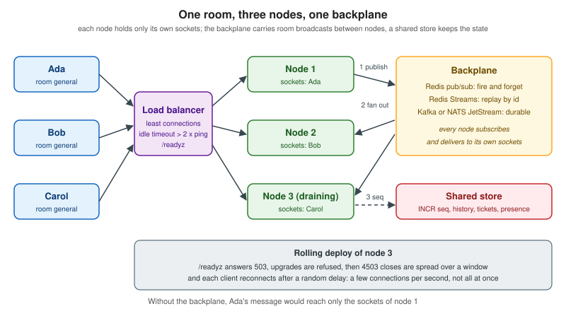

Scaling WebSockets
|
This content was generated with the assistance of AI and should be verified against the official documentation before being relied on in production. |
A WebSocket server is a stateful process: every connected client is an open socket, some memory, and often a room membership list that exists only in that process. That makes scaling different from a stateless HTTP API, where a load balancer can send any request anywhere. This page covers the three problems that appear in order as a real-time service grows: what one machine can hold (vertical limits), how several machines cooperate (sticky sessions and backplanes), and how to change the cluster without a storm (graceful deploys, draining and reconnection jitter). Every example was run for real, and the numbers quoted are from those runs.
The page was written against Node.js 24 with ws 8.22.0, ioredis 6.0.0, socket.io 4.8.4 with
@socket.io/redis-adapter 8.3.0, Redis 8.8.3, nginx 1.30 and Docker Compose, and cross-checked against the SignalR
(ASP.NET Core 10), Channels 4, Reverb on Laravel 13 and Atmosphere 4 pages of this section. Everything was checked on
2026-10-24. The stacks themselves are on Socket.IO, SignalR,
Django Channels, Laravel Reverb, Atmosphere,
Spring WebFlux WebSockets and Swoole; load balancer settings are
collected on Proxies, Load Balancers and Deployment, and media servers and TURN scale differently, see
Scaling WebRTC and TURN.
Which scenarios use it
-
Chatterbox is the scenario this page is written for. Rooms, history and acknowledgements follow the protocol of Message Design and Serialization, and a room can have members on every node, so a room broadcast must cross nodes.
-
Huddle uses WebSockets only for signalling (see Signaling and Perfect Negotiation): a signalling cluster is the same problem as Chatterbox with small messages. The media does not pass through it.
-
Pixel Arena is the exception. An authoritative game world lives in one process, so the usual answer is not a backplane but routing: all players of one arena go to the node that owns the arena (see Multiplayer Game Architecture).
The shape of the problem
The order matters. A single well-tuned node holds tens of thousands of idle connections, so many services never leave the first box. Moving to several nodes is not only an infrastructure change: everything the process kept in memory has to become either routable (always the same node) or shared (every node can answer).

Vertical limits
A connection costs a file descriptor, kernel socket buffers, and the memory the runtime and your own code attach to it. Before adding nodes, find out which of these runs out first.
File descriptors
Every socket is a descriptor, and a process may only open as many as its RLIMIT_NOFILE soft limit allows. The default is
often 1024, which means about a thousand connections minus the descriptors already used by the runtime, logs and the
backplane. The limit is raised in the place that starts the process: ulimit -n in a shell, LimitNOFILE in a systemd
unit, --ulimit nofile=65536:65536 or ulimits in Docker, and the container spec of the orchestrator. A reverse proxy needs
two descriptors per proxied WebSocket (one to the client, one to the backend), which is why nginx has worker_rlimit_nofile.
The first experiment holds idle WebSocket connections in one process and opens them from a second container, once with a
limit of 1024 and once with 65536. The holder is a plain ws server on an HTTP server whose only other route answers with
its own descriptor count (from the process descriptor directory) and resident memory (process.memoryUsage().rss).
The filler opens connections in batches of 250 and then asks the holder for its status. The result of the two runs:
Limit (nofile) |
Connections opened | Observation |
|---|---|---|
1024 |
1004 of 3000 |
1996 failed. The holder was at its limit and could not even answer the status request: the socket was closed from its side. |
65536 |
10000 of 10000 |
Process descriptors 10021, resident memory 66.7 MB before and 134.6 MB after. |
The second row gives the memory cost: 67.9 MB for 10000 idle connections is about 6.8 KB per connection for ws 8.22 on
Node 24, with no per-message compression and no application state. That is a floor, not a forecast. Add what your handler
keeps per socket (a user record, room sets, a token bucket, send queues), the kernel’s socket buffers (not part of the
process resident size) and the memory used while messages are in flight, and measure again with realistic traffic, as
described on Load Testing and Capacity Planning.
Source: Linux manual: getrlimit(2)
Ephemeral ports, backlog and tracking tables
Clients need no ports of their own beyond the one connection, but two hops in a cluster do:
-
The load balancer or proxy connects to each backend from a local port. Connections from one source address to one backend address and port are limited by the local port range. The range read inside the test container was
32768 60999, 28232 ports, so one proxy address can hold roughly 28 thousand connections to a single backendaddress:portbefore new ones fail. More backend addresses or ports, a widernet.ipv4.ip_local_port_range, or several proxy addresses raise the ceiling. -
A listening socket queues connections that the application has not accepted yet. After a restart thousands of clients arrive together, so both the application
backlogandnet.core.somaxconn(4096 in the test container) matter; see the reconnection section below. -
A host that does connection tracking (Docker, Kubernetes with kube-proxy, a firewall) has a table limit (
net.netfilter.nf_conntrack_max). Long-lived connections fill it for as long as they live.
# raise the descriptor ceiling for the whole host, then set LimitNOFILE or --ulimit per service
fs.file-max = 2097152
fs.nr_open = 1048576
# ephemeral ports for outgoing connections from a proxy to its backends
net.ipv4.ip_local_port_range = 10240 65535
# accept queue and SYN queue for reconnection bursts
net.core.somaxconn = 8192
net.ipv4.tcp_max_syn_backlog = 8192
# only on hosts that track connections
net.netfilter.nf_conntrack_max = 1048576The values are starting points, not recommendations: change one, measure, and keep what changed the failure you saw.
CPU, event loops and message rate
Idle connections are cheap; busy ones are not. CPU is spent on framing, JSON parsing, TLS, per-message compression and above all on fan-out: one message to a room of 5000 members is 5000 frames. A Node.js process runs one event loop, so use more than one process per machine when the loop saturates (see Cluster and Scaling), and remember that processes on one machine are separate nodes as far as in-memory rooms are concerned: they need the same backplane as processes on different machines.
Horizontal scaling and affinity
A load balancer sends each new connection to one node, and the connection stays there for hours. Two consequences:
-
Balancing happens once, at connect time. A round robin by connection count drifts as clients come and go, and a deploy that restarts nodes one by one leaves the last restarted node with the fewest connections. Prefer a policy based on open connections (
least_connin nginx, least outstanding connections in cloud balancers) and measure the spread. -
Nothing moves a live connection. Rebalancing means closing connections and letting clients reconnect, which is what the draining section does on purpose.
Sticky sessions
"Sticky sessions" (session affinity) send every request that belongs to one logical session to the same node. A plain WebSocket needs none: it is a single HTTP request that becomes a long-lived TCP connection, and that connection is already pinned to one node. Stickiness appears when a stack uses several requests for one session:
| Stack | Why it needs stickiness | How to avoid it |
|---|---|---|
Socket.IO |
The first HTTP long-polling requests and the transport upgrade must reach the node that created the session; otherwise the client gets HTTP 400. |
Clients use |
SignalR |
Negotiate and the transport request must reach the same server, also with the Redis backplane. |
Clients use WebSockets only with |
Atmosphere |
Its long-polling and streaming fallbacks use several requests. |
WebSocket only. |
Plain WebSocket, Channels, Reverb, WebFlux, Swoole, uWebSockets.js |
Nothing, apart from the handshake. |
Not applicable. |
When stickiness is needed, there are three common mechanisms. A hash of the client address (ip_hash in nginx) needs no
cookie but sends all clients behind one NAT to one node and breaks when the address changes. A cookie set by the load
balancer (the sticky directive of nginx Plus, the affinity cookie of ingress-nginx, the stickiness setting of AWS
Application Load Balancers) is more even. A hash of a request value (hash $arg_room consistent in nginx) is the way to
route by room or arena instead of by client, which is exactly what an in-memory game world needs. Stickiness also
fails softly: after a node restarts, the cookie still points at it, and a client has to be ready to be moved.
Where state lives
Without shared state, a cluster silently misbehaves instead of failing: messages reach only the users on the same node as the sender. Split the state of the application into four kinds and decide for each:
| State | Examples in Chatterbox | Where it goes |
|---|---|---|
Connection state |
the socket, its rooms, its rate-limit bucket |
In the node. It dies with the connection and is rebuilt on reconnect. |
Fan-out |
a message for room |
Over the backplane to every node that has a member of the room. |
Ordering and idempotency |
the per-room |
In a shared store with atomic operations (Redis |
Durable data |
history, read receipts, presence with expiry |
A database, Redis keys with expiry, or a stream, so that any node can answer |
Backplanes
A backplane forwards each broadcast to the other nodes, and every node delivers it to its own sockets. The choice is mainly about what happens to a message when a node is not listening at that moment.
Redis pub/sub, Redis Streams and Kafka or NATS
| Redis pub/sub | Redis Streams | Kafka or NATS JetStream | |
|---|---|---|---|
Delivery |
At most once. A message is delivered to current subscribers or lost. |
Persisted entries, readable from an id; at most once or at least once with consumer groups. |
Persisted log; at least once, replay from an offset or sequence. |
A node that was away |
Misses everything published meanwhile. |
Resumes from the last id it delivered. |
Resumes from its stored offset. |
Cost |
Almost none; no storage. |
Memory for the retained window ( |
A cluster to run; the most operations. |
Fits |
Typing indicators, presence changes, live room broadcasts where clients can catch up from history. |
Chat where a short outage must not lose messages and Redis is already there. |
Very high volume, several consumers of the same data, an audit trail, or a broker already in use. |
Pub/sub is the default because the application can usually repair what it lost: every Chatterbox message has a seq,
a client that sees a gap asks for history, and join with since replays what was missed. If your clients cannot
repair a loss, or the data matters, put the message in durable storage first and use the backplane only as the
notification that something new exists.
Two details of Redis pub/sub matter at scale. On a Redis Cluster, classic PUBLISH is propagated to every node of the
cluster, so the cluster bus carries every message to every node. Sharded pub/sub (Redis 7.0 and newer: SPUBLISH and
SSUBSCRIBE) assigns a channel to a slot and keeps the traffic inside one shard, which is what lets pub/sub throughput
grow by adding shards. And a subscriber that reads too slowly is disconnected by Redis once its output buffer exceeds the
client-output-buffer-limit pubsub setting, which silently drops every broadcast until the node resubscribes: monitor
the resubscribe count of your clients.
Source: Redis: Pub/sub and Redis: Streams
Kafka and NATS are used the same way as Streams. With Kafka every node must read all messages, so each node uses its own consumer group (a group id that includes the node name) instead of one shared group, which would split the messages between nodes. With NATS, core subjects are at most once like Redis pub/sub and JetStream adds persistence. See Kafka Consumers and Delivery Guarantees for the guarantees, and Redis Streams and Pub/Sub for the Redis side.
The backplane of each stack
| Stack | Backplane | Notes |
|---|---|---|
Socket.IO (Node.js) |
|
The pub/sub adapter has no connection state recovery; the Streams adapter has. Sticky sessions are still required with polling. |
python-socketio |
|
See python-socketio. |
SignalR |
Redis backplane ( |
Messages are lost while Redis is unavailable. |
Django Channels |
|
A layer carries messages to consumers and groups, it is not a store. See Django Channels. |
Laravel Reverb |
|
Without it nothing errors: messages reach only the users on one instance. |
Atmosphere |
|
Having the Redis module on the classpath makes it the default for every endpoint. |
Spring WebFlux |
None built in; a Redis pub/sub bus written with |
|
Swoole |
None built in; a user process subscribed to Redis that calls the local fan-out. |
See Swoole. |
uWebSockets.js, |
None built in; the topic tree of uWebSockets.js is per process. Publish through Redis, as in the example below. |
See uWebSockets.js. |
The configuration of the most used ones is short. The Socket.IO sharded adapter (verified with ioredis 6.0.0 and
Redis 8.8.3, two servers on two ports, one client each, WebSocket transport only):
import { Server } from "socket.io";
import { Redis } from "ioredis";
import { createShardedAdapter } from "@socket.io/redis-adapter";
export function start(port) {
const pub = new Redis("redis://localhost:18300");
const sub = pub.duplicate();
const io = new Server(port, { adapter: createShardedAdapter(pub, sub), cors: { origin: "https://chat.example.test" } });
io.on("connection", (socket) => {
socket.on("join", (room) => socket.join(room));
socket.on("say", (room, text) => io.to(room).emit("message", { text, from: port }));
});
return io;
}Source: Socket.IO: Redis adapter
SignalR registers the backplane next to AddSignalR; the channel prefix keeps several applications on one Redis apart:
builder.Services.AddSignalR()
.AddStackExchangeRedis("redis:6379", o =>
o.Configuration.ChannelPrefix = RedisChannel.Literal("chatterbox"));Channels takes the layer from the settings, and Reverb takes one environment variable:
CHANNEL_LAYERS = {
"default": {
"BACKEND": "channels_redis.core.RedisChannelLayer",
"CONFIG": {"hosts": [("redis", 6379)]},
},
}Source: Channels: Channel layers
REVERB_SCALING_ENABLED=true
REDIS_HOST=redisSource: Laravel: Reverb scaling
Atmosphere selects the relay per endpoint with the broadcaster class:
@ManagedService(path = "/relay/{room}", broadcaster = RedisBroadcaster.class)
public class RelayChat {
@Message
public String onMessage(String text) {
return text;
}
}Source: Atmosphere tutorial: Clustering
A complete example: two Chatterbox nodes and Redis
The server below is the smallest Chatterbox server that is still a cluster member. It speaks a subset of the wire protocol (hello, join, message, ack) so that the cluster behaviour is visible without the rest of the protocol; the full protocol is implemented on the server pages linked above. It shows the four rules of a backplane design:
-
a message is not delivered locally first: it goes through Redis and comes back to every node, the origin included, so all nodes see the same order;
-
the per-room
seqcomes from RedisINCR, one counter for the whole cluster; -
the subscriber has its own Redis connection, because a subscribed connection cannot run other commands;
-
shutdown is a sequence (readiness, refuse, spread the closes, exit), described in the next sections.
// Chatterbox subset (hello, join, message, ack) on ws, with a Redis pub/sub backplane and a draining shutdown.
import http from "node:http";
import { randomBytes } from "node:crypto";
import { setTimeout as sleep } from "node:timers/promises";
import { WebSocketServer } from "ws";
import Redis from "ioredis";
const NODE = process.env.NODE_ID ?? randomBytes(3).toString("hex");
const PORT = Number(process.env.PORT ?? 8080);
const REDIS_URL = process.env.REDIS_URL ?? "redis://localhost:6379";
const READY_DELAY_MS = Number(process.env.READY_DELAY_MS ?? 500); // time for the load balancer to notice /readyz
const DRAIN_WINDOW_MS = Number(process.env.DRAIN_WINDOW_MS ?? 5000); // spread of the 4503 closes; 0 = all at once
const CHANNEL = "cb:fanout";
const rooms = new Map(); // room -> Set<WebSocket> (this node only)
const accepted = []; // accept times, for the demo
let draining = false;
const data = new Redis(REDIS_URL); // commands
const sub = new Redis(REDIS_URL); // a subscribed connection cannot run other commands
await sub.subscribe(CHANNEL); // ioredis re-subscribes by itself after a reconnect
const envelope = (type, room, payload) =>
JSON.stringify({ v: 1, type, id: "s_" + randomBytes(8).toString("hex"), room, ts: Date.now(), payload });
function deliverLocal(room, frame) {
for (const ws of rooms.get(room) ?? []) if (ws.readyState === ws.OPEN) ws.send(frame);
}
sub.on("message", (_channel, raw) => {
const { room, frame } = JSON.parse(raw);
deliverLocal(room, frame);
});
const server = http.createServer((req, res) => {
if (req.url === "/readyz") {
res.statusCode = draining ? 503 : 200;
return res.end(draining ? "draining" : "ok");
}
if (req.url === "/stats") {
res.setHeader("content-type", "application/json");
return res.end(JSON.stringify({ node: NODE, connections: wss.clients.size, accepted }));
}
res.statusCode = 404;
res.end();
});
const wss = new WebSocketServer({ noServer: true, maxPayload: 16384 });
server.on("upgrade", (req, socket, head) => {
if (draining) {
socket.end("HTTP/1.1 503 Service Unavailable\r\nRetry-After: 1\r\nConnection: close\r\n\r\n");
return;
}
wss.handleUpgrade(req, socket, head, (ws) => wss.emit("connection", ws, req));
});
wss.on("connection", (ws) => {
accepted.push(Date.now());
ws.rooms = new Set();
ws.send(envelope("hello", null, { node: NODE }));
ws.on("message", async (buf) => {
let m;
try {
m = JSON.parse(buf.toString());
} catch {
return ws.close(4400, "bad json");
}
const ack = (result, seq = null) =>
ws.send(envelope("ack", m.room ?? null, { ref: m.id, ok: true, seq, dup: false, result }));
if (m.type === "join") {
if (!rooms.has(m.room)) rooms.set(m.room, new Set());
rooms.get(m.room).add(ws);
ws.rooms.add(m.room);
ack({ node: NODE });
} else if (m.type === "message") {
const seq = await data.incr(`cb:seq:${m.room}`); // one counter for the whole cluster
const frame = envelope("message", m.room, { text: m.payload.text, seq, via: NODE });
await data.publish(CHANNEL, JSON.stringify({ room: m.room, frame })); // every node, this one included
ack({}, seq);
}
});
ws.on("close", () => {
for (const r of ws.rooms) rooms.get(r)?.delete(ws);
});
});
server.listen(PORT, () => console.log(`${NODE} listening on ${PORT}`));
process.on("SIGTERM", async () => {
console.log(`${NODE} draining: ${wss.clients.size} connections, window ${DRAIN_WINDOW_MS} ms`);
draining = true; // /readyz now answers 503 and new upgrades are refused
await sleep(READY_DELAY_MS);
for (const ws of wss.clients) setTimeout(() => ws.close(4503, "restarting"), Math.random() * DRAIN_WINDOW_MS);
await sleep(DRAIN_WINDOW_MS + 1000);
for (const ws of wss.clients) ws.terminate();
await Promise.all([data.quit(), sub.quit()]);
server.close();
process.exit(0);
});Source: ws: API documentation and ioredis: Pub/Sub
The image and the Compose file start Redis and two nodes. Host ports 18300 (Redis), 18301 and 18302 (nodes) can be changed freely:
FROM node:24-alpine
WORKDIR /app
COPY package.json ./
RUN npm install --omit=dev
COPY server.mjs ./
USER node
CMD ["node", "server.mjs"]The dependencies are ws 8.22.0 and ioredis 6.0.0 in a package.json with the type field set to module.
name: g7-scaling-websockets
services:
redis:
image: redis:8.8.3-alpine
container_name: g7-scaling-websockets-redis
ports: ["18300:6379"]
chat-a:
build: ./app
image: g7-scaling-websockets-app
container_name: g7-scaling-websockets-a
environment:
NODE_ID: a
REDIS_URL: redis://redis:6379
DRAIN_WINDOW_MS: ${DRAIN_WINDOW_MS:-5000}
ports: ["18301:8080"]
depends_on: [redis]
stop_grace_period: 30s
chat-b:
image: g7-scaling-websockets-app
container_name: g7-scaling-websockets-b
environment:
NODE_ID: b
REDIS_URL: redis://redis:6379
ports: ["18302:8080"]
depends_on: [redis, chat-a]Source: Docker: Compose file reference
The test connects Ada to node a and Bob to node b, joins both to general, and sends one message from each side:
// Ada is on instance a (18301), Bob on instance b (18302): one room, one Redis.
import assert from "node:assert/strict";
import WebSocket from "ws";
function open(port, name) {
const ws = new WebSocket(`ws://localhost:${port}/ws`, "chatterbox.v1");
const inbox = [];
ws.on("message", (b) => inbox.push(JSON.parse(b.toString())));
const send = (type, room, payload) =>
ws.send(JSON.stringify({ v: 1, type, id: `${name}-${inbox.length}-${Math.random().toString(16).slice(2)}`, room, ts: 0, payload }));
return new Promise((resolve) => ws.once("open", () => resolve({ ws, inbox, send })));
}
const until = async (fn) => { for (let i = 0; i < 100; i++) { if (fn()) return; await new Promise((r) => setTimeout(r, 50)); } throw new Error("timeout"); };
const ada = await open(18301, "ada");
const bob = await open(18302, "bob");
await until(() => ada.inbox.length && bob.inbox.length);
console.log("Ada is on node", ada.inbox[0].payload.node, "- Bob is on node", bob.inbox[0].payload.node);
ada.send("join", "general", {});
bob.send("join", "general", {});
await until(() => ada.inbox.length >= 2 && bob.inbox.length >= 2);
ada.send("message", "general", { text: "hello from a" });
bob.send("message", "general", { text: "hello from b" });
await until(() => [ada, bob].every((c) => c.inbox.filter((e) => e.type === "message").length === 2));
for (const [who, c] of [["ada", ada], ["bob", bob]]) {
const msgs = c.inbox.filter((e) => e.type === "message").map((e) => `${e.payload.seq}:${e.payload.text}(via ${e.payload.via})`);
console.log(who, "received", msgs.join(" | "));
}
const seqs = (c) => c.inbox.filter((e) => e.type === "message").map((e) => e.payload.seq);
assert.deepEqual(seqs(ada), seqs(bob), "same order on both nodes");
assert.deepEqual([...seqs(ada)].sort(), [1, 2], "the cluster-wide counter gave 1 and 2");
console.log("OK: one room, two nodes, same seq order");
ada.ws.close(); bob.ws.close();Run it with docker compose up -d --build, then npm install ws@8.22.0 and node check.mjs. Output of the run:
Ada is on node a - Bob is on node b ada received 1:hello from b(via b) | 2:hello from a(via a) bob received 1:hello from b(via b) | 2:hello from a(via a) OK: one room, two nodes, same seq order
Both clients received both messages in the same order with numbers assigned by the shared counter, although each client is
connected to a different node. Changing data.publish(...) into a local deliverLocal(...) makes Ada and Bob stop seeing
each other’s messages, which is the failure that every missing backplane produces.
Source: Redis: INCR and Redis: PUBLISH
Replay with Redis Streams
Pub/sub forgets. The same Redis can keep the events, so that a node that was away reads what it missed from the id of
the last event it delivered. In the experiment PUBLISH to a channel with no subscriber returned 0 receivers and the
message vanished, while the stream entries written during the outage were returned by XREAD from the saved id:
// A node that was away resumes from the last id it delivered; pub/sub would have dropped these entries.
import Redis from "ioredis";
const STREAM = "cb:events:replay-demo";
const producer = new Redis("redis://localhost:18300");
await producer.del(STREAM);
let lastId = await producer.xadd(STREAM, "MAXLEN", "~", 10000, "*", "room", "general", "text", "delivered before the outage");
// the consumer node is "down": three more entries are appended meanwhile
for (const text of ["missed 1", "missed 2", "missed 3"])
await producer.xadd(STREAM, "MAXLEN", "~", 10000, "*", "room", "general", "text", text);
const reader = new Redis("redis://localhost:18300"); // XREAD BLOCK needs a connection of its own
const rows = await reader.xread("COUNT", 100, "BLOCK", 1000, "STREAMS", STREAM, lastId);
for (const [id, fields] of rows[0][1]) {
console.log("replayed", id, fields[3]);
lastId = id;
}
const empty = await reader.xread("BLOCK", 300, "STREAMS", STREAM, lastId);
console.log("then nothing new:", empty);
await producer.del(STREAM);
producer.disconnect(); reader.disconnect();Output:
replayed 1792885712584-1 missed 1 replayed 1792885712585-0 missed 2 replayed 1792885712585-1 missed 3 then nothing new: null
A production node would keep one stream per room (or one for the cluster), run the read loop on a dedicated connection with
XREAD BLOCK, keep the last id per node, and cap the stream with MAXLEN so that memory stays bounded. When the saved id
is older than the retained window the node must fall back to history from the database, exactly as a client does. The
Socket.IO Streams adapter implements this loop for you and is what makes connection state recovery possible.
Source: Redis: XREAD and Redis: XADD
Load balancer settings that affect scaling
The proxy in front of the nodes must pass the upgrade, balance by open connections, and keep an idle connection open for
longer than the application heartbeat. This nginx.conf was syntax-checked with nginx -t and run in front of the two
nodes of the example; 20 clients opened through it landed 12 on node a and 8 on node b:
worker_processes auto;
worker_rlimit_nofile 40000; # each proxied WebSocket uses two descriptors
events {
worker_connections 20000;
}
http {
map $http_upgrade $connection_upgrade {
default upgrade;
"" close;
}
upstream chatterbox {
least_conn; # long-lived connections: balance by open connections, not by requests
server chat-a:8080;
server chat-b:8080;
}
server {
listen 80;
location /ws {
proxy_pass http://chatterbox;
proxy_http_version 1.1;
proxy_set_header Upgrade $http_upgrade;
proxy_set_header Connection $connection_upgrade;
proxy_set_header Host $host;
proxy_set_header X-Forwarded-For $proxy_add_x_forwarded_for;
proxy_read_timeout 70s; # more than 2 x the 20 s application heartbeat
proxy_send_timeout 70s;
}
location = /readyz {
proxy_pass http://chatterbox; # only reports ready while an instance answers
}
}
}Source: nginx: WebSocket proxying and nginx: upstream module
The idle timeout rule is the same on every platform: it must be longer than twice the heartbeat so that one lost ping does
not close a healthy connection. nginx closes a proxied connection after proxy_read_timeout (60 seconds unless set), an
AWS Application Load Balancer after its idle timeout (60 seconds by default, 1 to 4000 allowed), and ingress-nginx takes the
value from the nginx.ingress.kubernetes.io/proxy-read-timeout annotation. For ingress-nginx stickiness use the
nginx.ingress.kubernetes.io/affinity annotation with value cookie, and nginx.ingress.kubernetes.io/upstream-hash-by
to route by a request variable. See Ingress and, for the complete treatment, Proxies, Load Balancers and Deployment.
Graceful deploys and draining
Restarting a node closes every connection it holds. The aim of a graceful deploy is that clients notice a planned
disconnection that they handle quickly and without a burst. The sequence implemented in server.mjs is:
-
Fail readiness first. The node answers
/readyzwith 503 and refuses new upgrades with503andRetry-After, so the balancer stops sending it clients. It then waitsREADY_DELAY_MSbecause the balancer needs one or two probe intervals to notice. -
Close with an application code, not by dying. Code 4503 ("server restarting") is defined for Chatterbox so that the client knows to reconnect at once with jitter instead of treating it as an error. Codes 1001 and 1012 serve the same purpose in other protocols.
-
Spread the closes. Closing all connections in one instant creates the storm this page ends with; closing them at random times within
DRAIN_WINDOW_MSturns it into a ramp. -
Leave enough time. The orchestrator sends SIGKILL after its grace period, so the grace period must exceed the sum of the readiness delay, the drain window and a margin.
In Kubernetes the pieces are the readiness probe, terminationGracePeriodSeconds and a rolling update that replaces few
pods at a time. This manifest parses as valid YAML, was checked by eye against the API reference and was not applied to a
cluster:
apiVersion: apps/v1
kind: Deployment
metadata:
name: chatterbox
spec:
replicas: 4
strategy:
rollingUpdate:
maxUnavailable: 1 # replace one pod at a time: about a quarter of the clients reconnect per step
maxSurge: 1
selector:
matchLabels: { app: chatterbox }
template:
metadata:
labels: { app: chatterbox }
spec:
terminationGracePeriodSeconds: 60 # preStop + READY_DELAY_MS + DRAIN_WINDOW_MS + margin
containers:
- name: app
image: registry.example.test/chatterbox:1.0.0
ports: [{ containerPort: 8080 }]
env:
- { name: READY_DELAY_MS, value: "3000" }
- { name: DRAIN_WINDOW_MS, value: "30000" }
readinessProbe:
httpGet: { path: /readyz, port: 8080 }
periodSeconds: 2
failureThreshold: 1
resources:
requests: { cpu: 500m, memory: 512Mi }
limits: { memory: 512Mi }
---
apiVersion: policy/v1
kind: PodDisruptionBudget
metadata:
name: chatterbox
spec:
maxUnavailable: 1
selector:
matchLabels: { app: chatterbox }With four replicas, maxUnavailable: 1 and a 30 second window, a rollout moves about a quarter of the clients at a time,
each over 30 seconds. Because the clients of a stopped node may land on any other node, including nodes that are about to
be replaced, rollouts that go faster than the clients reconnect cause a second round of disconnections; an
maxSurge pod that starts before an old one stops avoids a capacity dip. More on probes and strategies is on
Health Probes and Lifecycle and Deployment Strategies.
Reconnection storms and jitter
A storm is what happens when many clients lose their connection at the same time and retry at the same time: a node
restart, a load balancer failover, a network blip, a mobile operating system returning from sleep. The new node is
asked to authenticate, join rooms and replay history for all of them in one second, it slows down, many attempts time out,
and the clients retry again in lockstep. The client side of the cure (exponential back-off with full jitter) is on
Connection Lifecycle, Heartbeats and Reconnection; the server side is the staggered drain above plus limits that shed
load (connection rate limits, a bounded accept queue, close code 4429 and Retry-After).
The experiment measures both halves. 300 clients are connected to node a; docker kill -s TERM stops it; each client
reconnects with the policy below, trying node b after a 4503 close (standing in for the load balancer). Node b records
the time of each accepted connection and the client counts connections per 250 ms window:
// N clients on node a; a is told to stop; clients reconnect (to a, then b). MODE=jitter|none
import WebSocket from "ws";
const N = Number(process.env.N ?? 300);
const MODE = process.env.MODE ?? "jitter";
const TARGETS = [18301, 18302];
const BASE = 1000, CAP = 10000;
let attempts = 0, failures = 0, online = 0;
const reachedB = [];
function client(i) {
let attempt = 0, t = 0;
const connect = () => {
const port = TARGETS[t % TARGETS.length];
attempts++;
const ws = new WebSocket(`ws://localhost:${port}/ws`);
let opened = false;
ws.on("error", () => {});
ws.on("open", () => { opened = true; online++; attempt = 0; if (port === 18302) reachedB.push(Date.now()); });
ws.on("close", (code) => {
if (opened) online--; else { failures++; t++; }
if (opened && port === 18301) t = 1; // after an unexpected close, prefer the other node
const ceiling = Math.min(CAP, BASE * 2 ** attempt++);
const delay = MODE === "jitter" ? Math.random() * ceiling : 0;
setTimeout(connect, delay);
});
};
connect();
}
for (let i = 0; i < N; i++) client(i);
await new Promise((r) => setTimeout(r, 1500));
console.log(`before: ${online}/${N} online on a`);
console.log("DRAIN_NOW");
const t0 = Date.now();
await new Promise((r) => setTimeout(r, Number(process.env.WAIT ?? 20000)));
const buckets = new Map();
for (const ts of reachedB) { const k = Math.floor((ts - t0) / 250); buckets.set(k, (buckets.get(k) ?? 0) + 1); }
const peak = Math.max(0, ...buckets.values());
const last = reachedB.length ? Math.max(...reachedB) - t0 : 0;
console.log(`mode=${MODE}: ${reachedB.length}/${N} reached b, peak ${peak} connections per 250 ms, last at ${last} ms, ${attempts} attempts, ${failures} failed attempts`);
process.exit(0);| Drain window of the server | Client delay | Peak accepted per 250 ms | Last client connected | Share of the load at the peak |
|---|---|---|---|---|
none (all at once) |
none |
220 |
765 ms |
73 % |
none (all at once) |
full jitter, 1 s first window |
88 |
1740 ms |
29 % |
5 s |
none |
24 |
5637 ms |
8 % |
5 s |
full jitter, 1 s first window |
23 |
6448 ms |
8 % |
The numbers are one run on a laptop and will differ on every run, but the structure is stable. The server-side spread is the strong control: the same 300 connections took a peak of 220 per quarter second when closed together and 24 when closed over five seconds. Client jitter alone helps less than expected because the first back-off window is the base delay (1 s): the retries are spread over one second only, and the window grows only after failures. Use both, size the server window to the number of connections on the node divided by the rate the next node can absorb (an accept rate your load test has shown it can sustain), and give clients a larger first window when a close tells them the whole cluster is restarting.
Security considerations
-
The backplane is trusted infrastructure. The Socket.IO adapter does not sign or encrypt its messages, so anyone who can publish to the channel can inject events into every room. Keep Redis on a private network, use ACLs and TLS, and never share an instance (or a channel prefix) with an untrusted tenant.
-
Authenticate on the node that accepts the connection, before the socket joins a room, and re-check authorisation for every broadcast that carries privileged data. See Authentication and Authorization.
-
A cluster multiplies the limits of a single node: per-IP connection limits and rate limits must be enforced at the proxy as well as per node, because one client can open connections on every node. See Security.
Common errors and pitfalls
-
Messages reach only some users. A node without the backplane, a backplane with a different channel prefix, or several processes per machine with in-memory rooms. Test with two clients on two different nodes before shipping.
-
HTTP 400 on Socket.IO or negotiate failures on SignalR behind a balancer. Missing stickiness with the polling transport, or a cookie that points at a node that no longer exists.
-
Connections close every 60 seconds. The idle timeout of a proxy or balancer is shorter than the heartbeat.
-
The first thousand connections work, the next ones do not. The descriptor limit of the process, not of the host.
-
Sequence numbers or ids collide between nodes. A counter or idempotency table in node memory.
-
Duplicate delivery on the origin node. A node that delivers locally and also receives its own message from the backplane; use one path or an origin id.
-
Silent loss after a Redis blip. Pub/sub is at most once; add
seqgap detection and history, or use Streams. -
Everything restarts at once. Closing all connections in one instant, or a rollout with no readiness delay.
-
Load is uneven after a deploy. The last node to restart has the fewest connections; rebalance by draining the fullest node rather than by adding nodes.
-
Autoscaling on CPU only. Connection count is the signal that matters for idle sockets; see Observability and Autoscaling.
Version and specification notes
-
Socket.IO:
@socket.io/redis-adapter8.3.0 offerscreateAdapterandcreateShardedAdapter; the sharded adapter needs Redis 7.0 or newer,redis4.6 or newer orioredis5.9 or newer. The documentation recommends it for new development, and notes that theredispackage had reported problems restoring subscriptions after a reconnection. -
Redis: sharded pub/sub exists since 7.0. RESP3 clients can issue commands while subscribed; with RESP2 a subscribed connection is dedicated to subscriptions.
-
Redis
redis-py8.0 and newer changed socket timeout defaults, which broke blocking readers used by some layers: pin the client version that your backplane library was tested with (see Django Channels). -
SignalR: the documentation names the Azure SignalR Service as the recommendation on Azure and the Redis backplane for your own infrastructure; Redis still needs stickiness unless clients skip negotiation.
-
RFC 6455 defines close code 1001 ("going away") and reserves 4000 to 4999 for applications, which is where 4503 lives.
Related pages
-
Connection Lifecycle, Heartbeats and Reconnection for the client side of reconnection.
-
Proxies, Load Balancers and Deployment for proxy, ingress and manifest details.
-
Load Testing and Capacity Planning and Observability for measuring connections per node.
-
Scaling WebRTC and TURN for media servers and TURN.